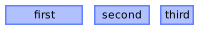
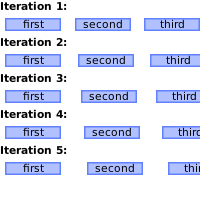
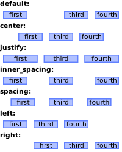
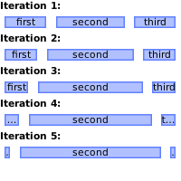

Module: wibox.layout.ratio
A layout filling all the available space.
Each widget is assigned a ratio (percentage) of the total space. Multiple methods are available to ajust this ratio.

Usage:
local w = wibox.widget {
generic_widget( 'first' ),
generic_widget( 'second' ),
generic_widget( 'third' ),
layout = wibox.layout.ratio.horizontal
}
w:ajust_ratio(2, 0.44, 0.33, 0.22)
Info:
- Copyright: 2016 Emmanuel Lepage Vallee
- Author: Emmanuel Lepage Vallee
Constructors
| wibox.layout.ratio.horizontal (...) | Returns a new horizontal ratio layout. | |
| wibox.layout.ratio.vertical (...) | Returns a new vertical ratio layout. | |
Object properties
| spacing_widget | widget | The widget used to fill the spacing between the layout elements. | |
| spacing | number | Add spacing between each layout widgets. | |
| inner_fill_strategy | string | Set how the space of invisible or 0x0 sized widget is redistributed. |
|
| children | table | Get or set the children elements. | Inherited from wibox.widget |
| all_children | table | Get all direct and indirect children widgets. | Inherited from wibox.widget |
| forced_height | number or nil | Force a widget height. | Inherited from wibox.widget |
| forced_width | number or nil | Force a widget width. | Inherited from wibox.widget |
| opacity | number | The widget opacity (transparency). | Inherited from wibox.widget |
| visible | boolean | The widget visibility. | Inherited from wibox.widget |
| buttons | table | The widget buttons. | Inherited from wibox.widget |
Object methods
| :inc_ratio (index, increment) | Increase the ratio of “widget”. | |
| :inc_widget_ratio (widget, increment) | Increment the ratio of the first instance of widget. |
|
| :set_ratio (index, percent) | Set the ratio of the widget at position index. |
|
| :get_ratio (index) | Get the ratio at index. |
|
| :set_widget_ratio (widget, percent) | Set the ratio of widget to percent. |
|
| :ajust_ratio (index, before, itself, after) | Update all widgets to match a set of a ratio. | |
| :ajust_widget_ratio (widget, before, itself, after) | Update all widgets to match a set of a ratio. | |
| :add (...) | Add some widgets to the given fixed layout. | |
| :remove (index) | Remove a widget from the layout. | |
| :insert (index, widget) | Insert a new widget in the layout at position index. |
|
| :set (index, widget2) | Set a widget at a specific index, replace the current one. | |
| :replace_widget (widget, widget2[, recursive=false]) | Replace the first instance of widget in the layout with widget2. |
|
| :swap (index1, index2) | Swap 2 widgets in a layout. | |
| :swap_widgets (widget1, widget2[, recursive=false]) | Swap 2 widgets in a layout. | |
| :reset () | Reset a ratio layout. | |
| :setup {[args]} | Set a declarative widget hierarchy description. | Inherited from wibox.widget |
| :add_button (button) | Add a new awful.button to this widget. | Inherited from wibox.widget |
| :emit_signal_recursive (signal_name, ...) | Emit a signal and ensure all parent widgets in the hierarchies also forward the signal. | Inherited from wibox.widget |
| :emit_signal (name, ...) | Emit a signal. | Inherited from gears.object |
| :connect_signal (name, func) | Connect to a signal. | Inherited from gears.object |
| :weak_connect_signal (name, func) | Connect to a signal weakly. | Inherited from gears.object |
Signals
| widget::layout_changed | When the layout (size) change. | Inherited from wibox.widget |
| widget::redraw_needed | When the widget content changed. | Inherited from wibox.widget |
| button::press | When a mouse button is pressed over the widget. | Inherited from wibox.widget |
| button::release | When a mouse button is released over the widget. | Inherited from wibox.widget |
| mouse::enter | When the mouse enter a widget. | Inherited from wibox.widget |
| mouse::leave | When the mouse leave a widget. | Inherited from wibox.widget |
Constructors
- wibox.layout.ratio.horizontal (...)
-
Returns a new horizontal ratio layout. A ratio layout shares the available space.
equally among all widgets. Widgets can be added via :add(widget).
Parameters:
- ... widget Widgets that should be added to the layout.
- wibox.layout.ratio.vertical (...)
-
Returns a new vertical ratio layout. A ratio layout shares the available space.
equally among all widgets. Widgets can be added via :add(widget).
Parameters:
- ... widget Widgets that should be added to the layout.
Object properties
- spacing_widget (widget) · 1 signals
-
The widget used to fill the spacing between the layout elements.
By default, no widget is used.
Usage:
-- Use the separator widget directly local w1 = wibox.widget { spacing = 10, spacing_widget = wibox.widget.separator, layout = wibox.layout.ratio.horizontal } -- Use a standard declarative widget construct local w2 = wibox.widget { spacing = 10, spacing_widget = { color = '#00ff00', shape = gears.shape.circle, widget = wibox.widget.separator, }, layout = wibox.layout.ratio.horizontal } -- Use composed widgets local w3 = wibox.widget { spacing = 10, spacing_widget = { { text = 'F', widget = wibox.widget.textbox, }, bg = '#ff0000', widget = wibox.container.background, }, layout = wibox.layout.ratio.horizontal } -- Use negative spacing to create a powerline effect local w4 = wibox.widget { spacing = -12, spacing_widget = { color = '#ff0000', shape = gears.shape.powerline, widget = wibox.widget.separator, }, layout = wibox.layout.ratio.horizontal }
Click to display more Emit signals:
property::spacing_widgetWhen the spacing_widget value changes.selfwibox.layout.ratio The object which changed (useful when connecting many object to the same callback).new_valuespacing_widget The new value affected to the property.
- spacing (number) · 1 signals
-
Add spacing between each layout widgets.

Type constraints:
- spacing number Spacing between widgets.
Usage:
for i=1, 5 do local w = wibox.widget { first, second, third, spacing = i*3, layout = wibox.layout.ratio.horizontal } end
Click to display more Emit signals:
property::spacingWhen the spacing value changes.selfwibox.layout.ratio The object which changed (useful when connecting many object to the same callback).new_valuespacing The new value affected to the property.
- inner_fill_strategy (string) · 1 signals
-
Set how the space of invisible or
0x0sized widget is redistributed.Possible values:
- “default”: Honor the ratio and do not redistribute the space.
- “justify”: Distribute the space among remaining widgets.
- “center”: Squash remaining widgets and leave equal space on both side.
- “inner_spacing”: Add equal spacing between all widgets.
- “spacing”: Add equal spacing between all widgets and on the outside.
- “left”: Squash remaining widgets and leave empty space on the left.
- “right”: Squash remaining widgets and leave empty space on the right.

Type constraints:
- inner_fill_strategy string One of the value listed above.
Click to display more Emit signals:
property::inner_fill_strategyWhen the inner_fill_strategy value changes.selfwibox.layout.ratio The object which changed (useful when connecting many object to the same callback).new_valueinner_fill_strategy The new value affected to the property.
- children (table) · Inherited from wibox.widget
-
Get or set the children elements.
Type constraints:
- children table The children.
- all_children (table) · Inherited from wibox.widget
-
Get all direct and indirect children widgets.
This will scan all containers recursively to find widgets
Warning: This method it prone to stack overflow id the widget, or any of its
children, contain (directly or indirectly) itself.
Type constraints:
- children table The children.
- forced_height (number or nil) · Inherited from wibox.widget
-
Force a widget height.
Type constraints:
- height
number or nil
The height (
nilfor automatic)
- height
number or nil
The height (
- forced_width (number or nil) · Inherited from wibox.widget
-
Force a widget width.
Type constraints:
- width
number or nil
The width (
nilfor automatic)
- width
number or nil
The width (
- opacity (number) · Inherited from wibox.widget
-
The widget opacity (transparency).
Type constraints:
- opacity number The opacity (between 0 and 1) (default 1)
- visible (boolean) · Inherited from wibox.widget
- The widget visibility.
- buttons (table) · Inherited from wibox.widget
-
The widget buttons.
The table contains a list of awful.button objects.
See also:
Object methods
- :inc_ratio (index, increment)
-
Increase the ratio of “widget”.
If the increment produce an invalid ratio (not between 0 and 1), the method
do nothing.

Parameters:
- index number The widget index to change
- increment number An floating point value between -1 and 1 where the end result is within 0 and 1
Usage:
local ret = wibox.layout.fixed.vertical() local w = wibox.widget { first, second, third, layout = wibox.layout.ratio.horizontal } for i=1, 5 do w:inc_ratio(2, 0.1) end
- :inc_widget_ratio (widget, increment)
-
Increment the ratio of the first instance of
widget. If the increment produce an invalid ratio (not between 0 and 1), the method do nothing.Parameters:
- widget widget The widget to ajust
- increment number An floating point value between -1 and 1 where the end result is within 0 and 1
- :set_ratio (index, percent)
-
Set the ratio of the widget at position
index.Parameters:
- index number The index of the widget to change
- percent number An floating point value between 0 and 1
- :get_ratio (index)
-
Get the ratio at
index.Parameters:
- index number The widget index to query
Returns:
-
number
The index (between 0 and 1)
- :set_widget_ratio (widget, percent)
-
Set the ratio of
widgettopercent.Parameters:
- widget widget The widget to ajust.
- percent number A floating point value between 0 and 1.
- :ajust_ratio (index, before, itself, after)
-
Update all widgets to match a set of a ratio.
The sum of before, itself and after must be 1 or nothing will be done.
Parameters:
- index number The index of the widget to change
- before number The sum of the ratio before the widget
- itself number The ratio for “widget”
- after number The sum of the ratio after the widget
Usage:
local ret = wibox.layout.fixed.vertical() local w = wibox.widget { first, second, third, layout = wibox.layout.ratio.horizontal } local values = { {0.25, 0.50, 0.25}, {0.33, 0.55, 0.12}, {0.123, 0.456, 0.789}, {0.123, 0, 0.789}, {0, 1, 0}, } for i=1, 5 do w:ajust_ratio(2, unpack(values[i])) end
- :ajust_widget_ratio (widget, before, itself, after)
-
Update all widgets to match a set of a ratio.
Parameters:
- widget widget The widget to ajust
- before number The sum of the ratio before the widget
- itself number The ratio for “widget”
- after number The sum of the ratio after the widget
- :add (...) · 1 signals
-
Add some widgets to the given fixed layout.
Parameters:
- ... widget Widgets that should be added (must at least be one)
Click to display more Emit signals:
widget::addedAll new widgets are passed in the parameters.selfwidgetThe layout.
- :remove (index) · 1 signals
-
Remove a widget from the layout.
Parameters:
- index number The widget index to remove
Returns:
-
boolean
index If the operation is successful
Click to display more Emit signals:
widget::removedselfwidgetThe fixed layout.widgetwidgetindex The removed widget.indexnumberThe removed index.
- :insert (index, widget) · 1 signals
-
Insert a new widget in the layout at position
index.Parameters:
- index number The position.
- widget widget The widget.
Click to display more Emit signals:
widget::insertedselfwidgetThe ratio layout.widgetwidgetindex The inserted widget.countnumberThe widget count.
- :set (index, widget2) · 1 signals
-
Set a widget at a specific index, replace the current one.
Parameters:
- index number A widget or a widget index
- widget2 widget The widget to take the place of the first one
Returns:
-
boolean
If the operation is successful
Click to display more Emit signals:
widget::replacedselfwidgetThe layout.widgetwidgetindex The inserted widget.previouswidgetThe previous widget.indexnumberThe replaced index.
- :replace_widget (widget, widget2[, recursive=false]) · 1 signals
-
Replace the first instance of
widgetin the layout withwidget2.Signal: widget::replaced The argument is the new widget and the old one and the index.
Parameters:
- widget widget The widget to replace
- widget2
widget
The widget to replace
widgetwith - recursive boolean Dig in all compatible layouts to find the widget. (default false)
Returns:
-
boolean
If the operation is successful
Click to display more Emit signals:
widget::replacedselfwidgetThe layout.widgetwidgetindex The inserted widget.previouswidgetThe previous widget.indexnumberThe replaced index.
- :swap (index1, index2) · 1 signals
-
Swap 2 widgets in a layout.
Parameters:
- index1 number The first widget index
- index2 number The second widget index
Returns:
-
boolean
If the operation is successful
Click to display more Emit signals:
widget::swappedselfwidgetThe layout.widget1widgetindex The first widget.widget2widgetindex The second widget.index1numberThe first index.index1numberThe second index.
- :swap_widgets (widget1, widget2[, recursive=false]) · 1 signals
-
Swap 2 widgets in a layout.
If widget1 is present multiple time, only the first instance is swapped
Signal: widget::swapped The arguments are both widgets and both (new) indexes.
if the layouts not the same, then only
widget::replacedwill be emitted.Parameters:
- widget1 widget The first widget
- widget2 widget The second widget
- recursive boolean Dig in all compatible layouts to find the widget. (default false)
Returns:
-
boolean
If the operation is successful
Click to display more Emit signals:
widget::swappedselfwidgetThe layout.widget1widgetindex The first widget.widget2widgetindex The second widget.index1numberThe first index.index1numberThe second index.
- :reset () · 1 signals
-
Reset a ratio layout. This removes all widgets from the layout.
Click to display more Emit signals:
widget::resetselfwidgetThe layout.
- :setup {[args]} · Inherited from wibox.widget
-
Set a declarative widget hierarchy description.
See The declarative layout system
Parameters:
- args An array containing the widgets disposition
- :add_button (button) · Inherited from wibox.widget
-
Add a new awful.button to this widget.
Parameters:
- button awful.button The button to add.
- :emit_signal_recursive (signal_name, ...) · Inherited from wibox.widget
-
Emit a signal and ensure all parent widgets in the hierarchies also
forward the signal. This is useful to track signals when there is a dynamic
set of containers and layouts wrapping the widget.
Parameters:
- signal_name string
- ... Other arguments
- :emit_signal (name, ...) · Inherited from gears.object
-
Emit a signal.
Parameters:
- name string The name of the signal.
- ... Extra arguments for the callback functions. Each connected function receives the object as first argument and then any extra arguments that are given to emit_signal().
- :connect_signal (name, func) · Inherited from gears.object
-
Connect to a signal.
Parameters:
- name string The name of the signal.
- func function The callback to call when the signal is emitted.
- :weak_connect_signal (name, func) · Inherited from gears.object
-
Connect to a signal weakly.
This allows the callback function to be garbage collected and automatically disconnects the signal when that happens.
Warning: Only use this function if you really, really, really know what you are doing.
Parameters:
- name string The name of the signal.
- func function The callback to call when the signal is emitted.
Signals
- widget::layout_changed · Inherited from wibox.widget
-
When the layout (size) change.
This signal is emitted when the previous results of
:layout()and:fit()are no longer valid. Unless this signal is emitted,:layout()and:fit()must return the same result when called with the same arguments.See also:
- widget::redraw_needed · Inherited from wibox.widget
-
When the widget content changed.
This signal is emitted when the content of the widget changes. The widget will
be redrawn, it is not re-layouted. Put differently, it is assumed that
:layout()and:fit()would still return the same results as before.See also:
- button::press · Inherited from wibox.widget
-
When a mouse button is pressed over the widget.
Arguments:
- self table The current object instance itself.
- lx number The horizontal position relative to the (0,0) position in the widget.
- ly number The vertical position relative to the (0,0) position in the widget.
- button number The button number.
- mods table The modifiers (mod4, mod1 (alt), Control, Shift)
- find_widgets_result The entry from the result of
wibox.drawable:find_widgets for the position that the mouse hit.
- drawable wibox.drawable The drawable containing the widget.
- widget widget The widget being displayed.
- hierarchy wibox.hierarchy The hierarchy managing the widget’s geometry.
- x number An approximation of the X position that the widget is visible at on the surface.
- y number An approximation of the Y position that the widget is visible at on the surface.
- width number An approximation of the width that the widget is visible at on the surface.
- height number An approximation of the height that the widget is visible at on the surface.
- widget_width number The exact width of the widget in its local coordinate system.
- widget_height number The exact height of the widget in its local coordinate system.
See also:
- button::release · Inherited from wibox.widget
-
When a mouse button is released over the widget.
Arguments:
- self table The current object instance itself.
- lx number The horizontal position relative to the (0,0) position in the widget.
- ly number The vertical position relative to the (0,0) position in the widget.
- button number The button number.
- mods table The modifiers (mod4, mod1 (alt), Control, Shift)
- find_widgets_result The entry from the result of
wibox.drawable:find_widgets for the position that the mouse hit.
- drawable wibox.drawable The drawable containing the widget.
- widget widget The widget being displayed.
- hierarchy wibox.hierarchy The hierarchy managing the widget’s geometry.
- x number An approximation of the X position that the widget is visible at on the surface.
- y number An approximation of the Y position that the widget is visible at on the surface.
- width number An approximation of the width that the widget is visible at on the surface.
- height number An approximation of the height that the widget is visible at on the surface.
- widget_width number The exact width of the widget in its local coordinate system.
- widget_height number The exact height of the widget in its local coordinate system.
See also:
- mouse::enter · Inherited from wibox.widget
-
When the mouse enter a widget.
Arguments:
- self table The current object instance itself.
- find_widgets_result The entry from the result of
wibox.drawable:find_widgets for the position that the mouse hit.
- drawable wibox.drawable The drawable containing the widget.
- widget widget The widget being displayed.
- hierarchy wibox.hierarchy The hierarchy managing the widget’s geometry.
- x number An approximation of the X position that the widget is visible at on the surface.
- y number An approximation of the Y position that the widget is visible at on the surface.
- width number An approximation of the width that the widget is visible at on the surface.
- height number An approximation of the height that the widget is visible at on the surface.
- widget_width number The exact width of the widget in its local coordinate system.
- widget_height number The exact height of the widget in its local coordinate system.
See also:
- mouse::leave · Inherited from wibox.widget
-
When the mouse leave a widget.
Arguments:
- self table The current object instance itself.
- find_widgets_result The entry from the result of
wibox.drawable:find_widgets for the position that the mouse hit.
- drawable wibox.drawable The drawable containing the widget.
- widget widget The widget being displayed.
- hierarchy wibox.hierarchy The hierarchy managing the widget’s geometry.
- x number An approximation of the X position that the widget is visible at on the surface.
- y number An approximation of the Y position that the widget is visible at on the surface.
- width number An approximation of the width that the widget is visible at on the surface.
- height number An approximation of the height that the widget is visible at on the surface.
- widget_width number The exact width of the widget in its local coordinate system.
- widget_height number The exact height of the widget in its local coordinate system.
See also: